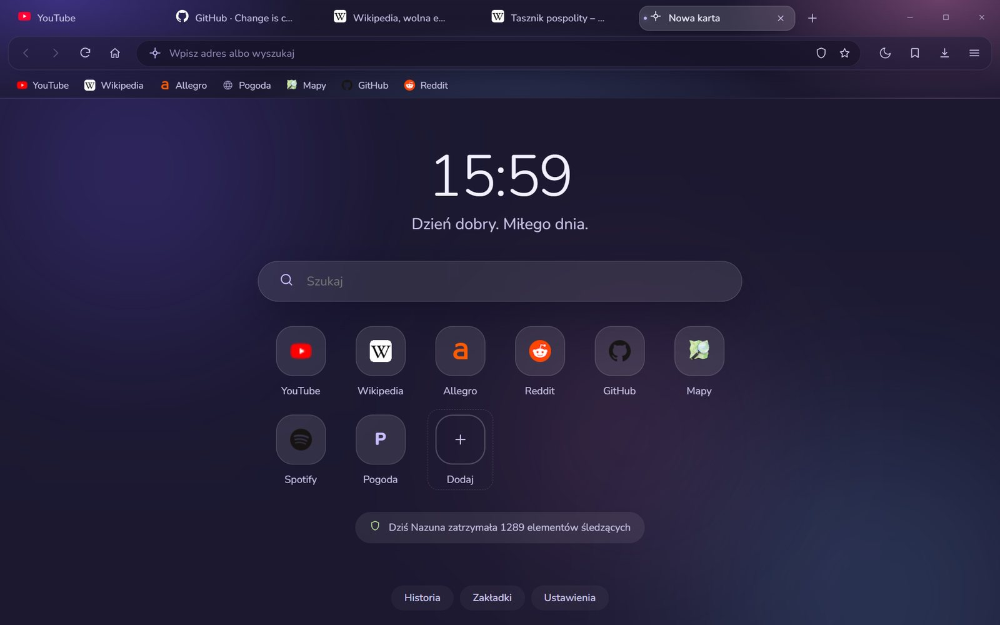
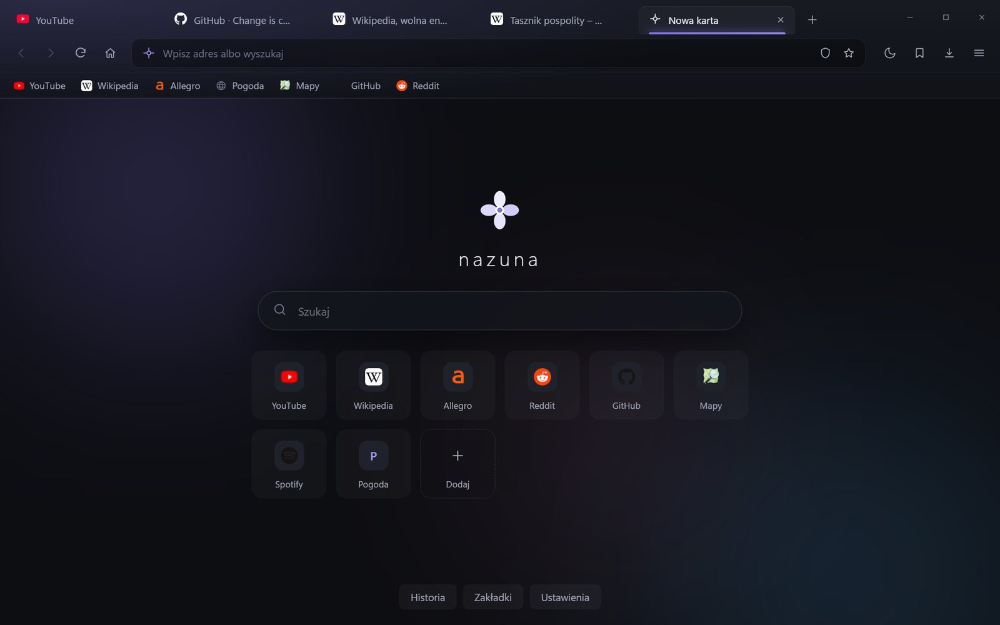
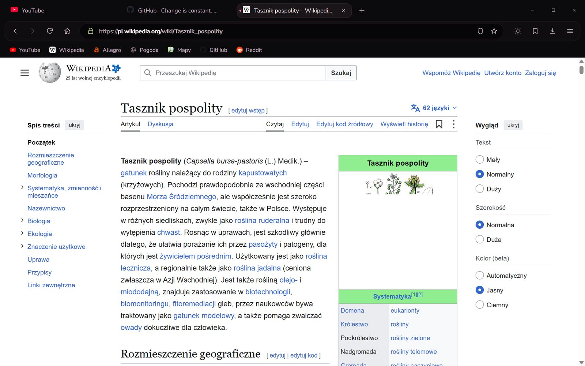
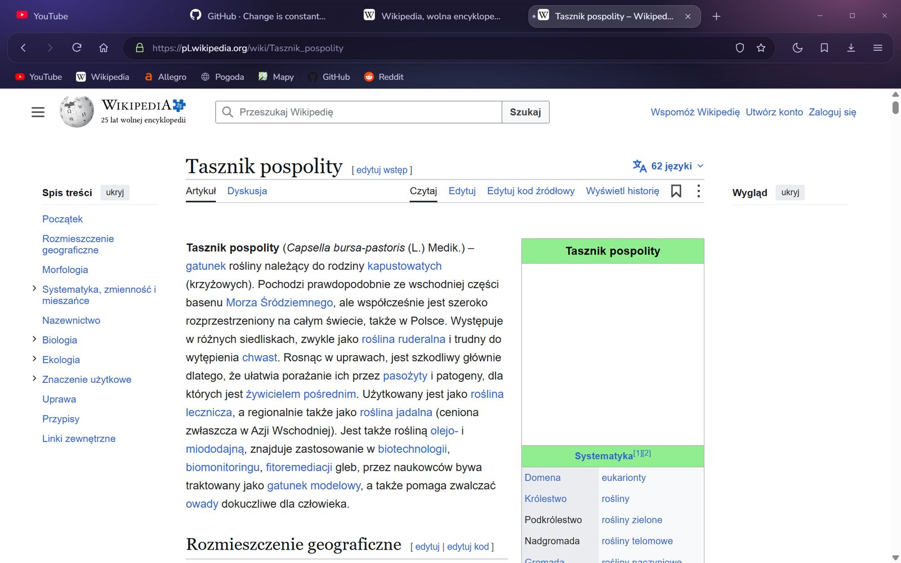
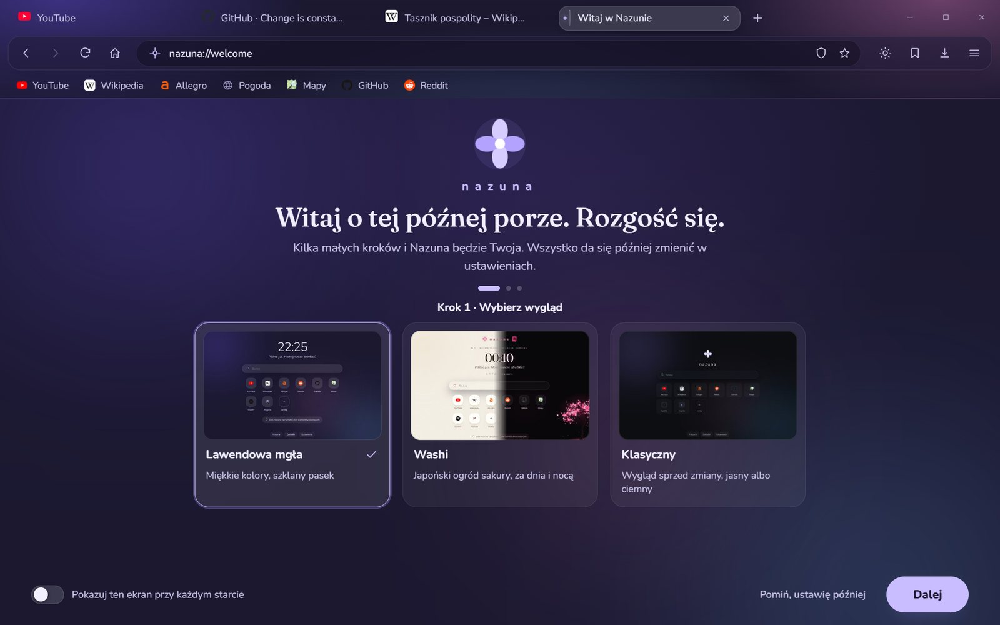

Nowa Nazuna.
Lawendowa mgła.
Ta sama szybka i prywatna przeglądarka, tylko w nowym, spokojnym wyglądzie: miękkie kolory, szklany pasek i nowa karta, na którą chce się patrzeć.

Spokojny start każdej karty
Zamiast pustej strony: zegar, powitanie dopasowane do pory dnia i Twoje ulubione strony pod ręką.
Zegar i powitanie
Rano „Dzień dobry”, wieczorem „Dobry wieczór”. Drobiazg, który robi różnicę.
Licznik ochrony
Widzisz, ile reklam i elementów śledzących Nazuna zatrzymała dzisiaj. Liczy tylko liczbę, nie zapisuje adresów.
Słońce i księżyc
Jeden przycisk na pasku przełącza strony między jasnym a ciemnym wyglądem. Domyślnie jak w Windows.
Wybierz swój nastrój
W Lawendowej mgle trzy zestawy kolorów tła. Zmiana działa od razu, w całej przeglądarce.


Mgła, papier albo klasyka
Lawendowa mgła, japoński ogród Washi (za dnia papier, nocą świecąca sakura) albo Klasyczny wygląd sprzed zmiany. Przełączasz jednym kliknięciem w ustawieniach.



Japoński ogród za dnia i nocą
Za dnia kremowy papier z pastelową sakurą, nocą głęboka czerń i świecące różowe drzewo. Pora zmienia się sama razem z przyciskiem słońca i księżyca.
- Logo Nazuny z pieczęcią 薺 (tak po japońsku pisze się „nazuna”)
- Dawna japońska nazwa miesiąca i powitanie, np. こんばんは · konbanwa
- Okno prywatne zostaje turkusowe, żeby od razu było widać różnicę

Szkło nad każdą stroną
Karty jak zaokrąglone pigułki, pasek adresu jak z matowego szkła. Lekko, czytelnie i bez zbędnych przycisków.
- Zakładki na pasku z ikonami stron
- Tarcza blokera zawsze pod ręką
- Nowe karty delikatnie „rozkwitają” przy otwieraniu

Kilka kroków i gotowe
Na powitanie Nazuna pyta tylko o to, co ważne: wygląd i kolory. Potem pomaga zabrać zakładki z poprzedniej przeglądarki i pokazuje, jak Cię chroni. Wszystko da się później zmienić w ustawieniach.
- Lawendowa mgła, Washi albo Klasyczny
- Zakładki z Chrome, Edge, Brave, Opery i Firefoksa jednym kliknięciem
- Podgląd zmian na żywo
- Ekran powitalny można przywołać z menu

Noc i turkus
Okno prywatne ma własny charakter, więc od razu wiesz, gdzie jesteś. Ten kolor jest zarezerwowany tylko dla niego.
- Po zamknięciu nie zostaje historia ani ciasteczka
- Pobrane pliki nie trafiają na listę
- Nic nie jest zapisywane na dysku

Przesuń, żeby porównać
Wolisz po staremu? Klasyczny wygląd został i można go wybrać w każdej chwili.
Nowy wygląd w każdym zakątku
Ustawienia, historia, zakładki, pobrane pliki i strona „O Nazunie”. Kliknij, żeby powiększyć.
Gotowa, kiedy Ty jesteś
Bloker reklam, osobne ciasteczka dla każdej strony i ostrzeżenia przed wirusami i wyłudzaniem haseł działają od pierwszej minuty. Bez AI, bez zakładania konta.
Pobierz Nazunę